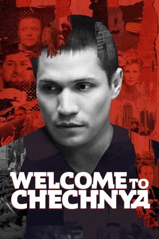

About the film
The extraordinary story of a man who risks everything to preserve freedom of speech in Russia. In December 2021, Dmitry Muratov is awarded the Nobel Peace Prize. He is the editor-in-chief of Russia’s only independent newspaper, Novaya Gazeta. Six of his journalists have been murdered, after their reports displeased the state. In February 2022 Russia invades Ukraine. In early March, Muratov secretly negotiates free passage for forty journalists with the Latvian government. Then he returns to Moscow to look after his paper and its remaining staff. To this day, he refuses to leave Moscow, whatever the pressure on him and his team. “Putin stands for death.” Muratov says. “I stand for life.”
At the festival
- 2023 Centerpiece · World Premiere · Friday, November 3, 2023 · 8:45 PM · Martin Luther King, Jr. Memorial LibraryPost-screening talkback with director Patrick Forbes, moderated by David Herszenhorn of The Washington Post.
More films on these topics
- An Unknown SubstanceSteven Leckart2026 · 39 min
- Short Strand: Against the GrainSteven Leckart, Maia Wikler2026
 The Oligarch and the Art DealerAndreas Dalsgaard2026 · 120 min
The Oligarch and the Art DealerAndreas Dalsgaard2026 · 120 min- 23Milan M.A. Gonzales2023 · 10 min
 Mariupolis 2Mantas Kvedaravičius2022 · 112 min
Mariupolis 2Mantas Kvedaravičius2022 · 112 min
Welcome to Chechnya: Inside The Russian Republic’s Deadly War On GaysWelcome to Chechnya2020 · 107 min